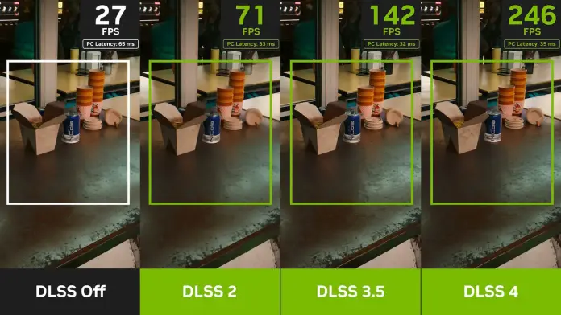
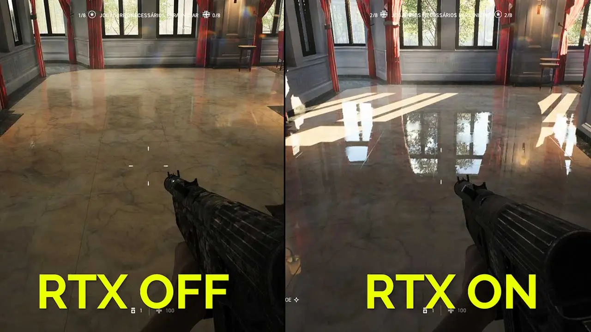
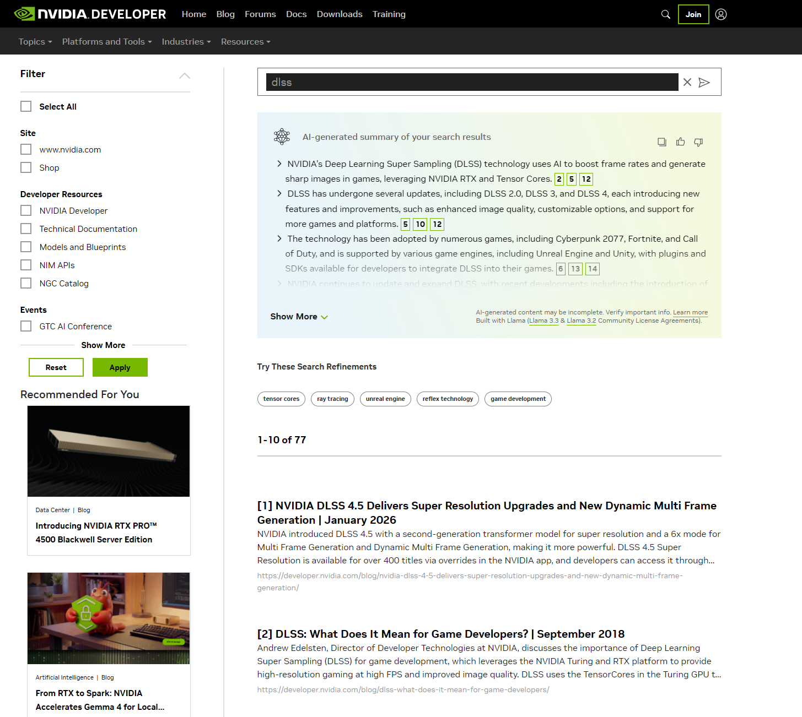
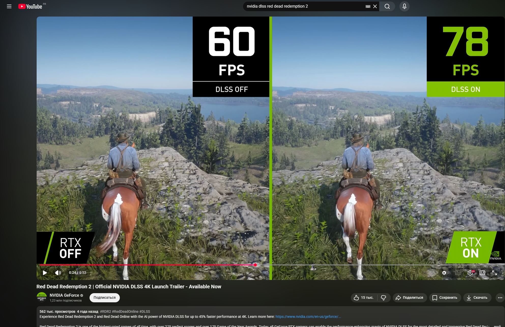
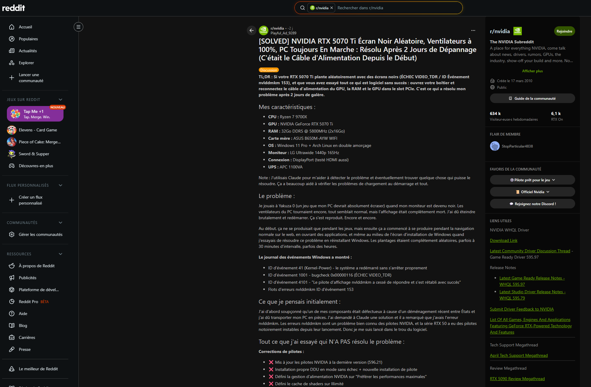
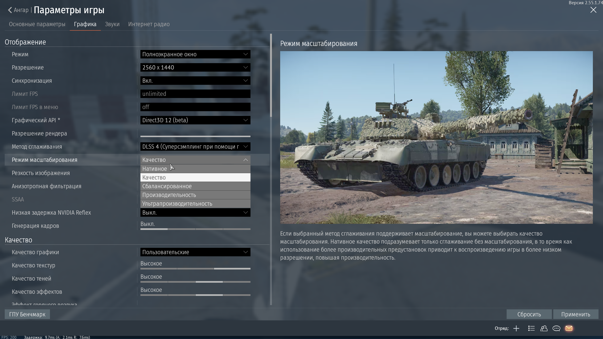
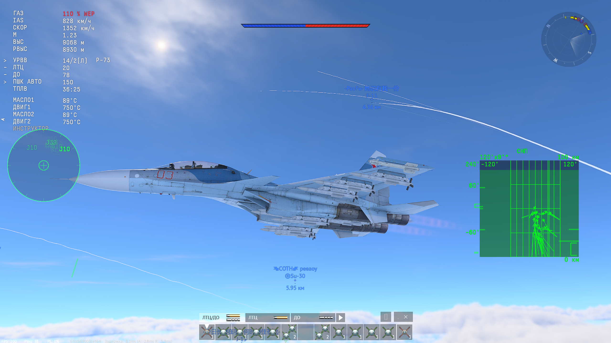

Comment l'intelligence artificielle de NVIDIA améliore les graphismes et les performances dans les jeux vidéo
J'ai choisi de suivre les technologies IA de NVIDIA dans le jeu vidéo, et plus précisément le DLSS, le ray tracing et les nouvelles cartes RTX. Trois raisons m'ont poussé vers ce sujet :
DLSS 3.5 Ray Tracing RTX 5070 / Blackwell Frame Generation ACE (IA dans les PNJ) Reflex 2
Pour ne pas être perdu avec trop d'informations, j'ai choisi trois points précis à suivre :


J'ai d'abord cherché beaucoup de sources différentes, puis j'en ai gardé seulement les meilleures pour ne pas être submergé d'informations inutiles.
J'ai limité mes sources actives à 5 principales pour que ma veille reste rapide et efficace à consulter.

Pour ne pas avoir à aller sur chaque site manuellement, j'utilise des outils qui regroupent les nouvelles à ma place :

Partager sa veille, c'est important. Ça prouve qu'on a vraiment compris le sujet, et ça aide les autres dans la communauté.

Ce que j'apprends dans ma veille, je le teste directement. J'ai une RTX 5070 dans mon PC personnel, ce qui me permet de tester toutes ces technologies chez moi.


Grâce à cette veille, j'ai appris que NVIDIA ne fait plus seulement des cartes graphiques : ils développent aussi des outils logiciels (DLSS SDK, plugins Unity/Unreal) que tout développeur peut utiliser dans ses projets.
La chose la plus intéressante que j'ai apprise : le GPU ne calcule plus forcément chaque pixel. Avec le DLSS, l'IA reconstruit l'image à partir d'une version moins détaillée — le résultat est proche du rendu natif, mais bien plus rapide. C'est un vrai changement dans la façon de développer des jeux.
Avoir une RTX 5070 m'a aussi montré la réalité du terrain : les nouvelles technologies peuvent avoir des bugs (comme les crashes kernel avec les derniers drivers). La veille m'a aidé à trouver la solution rapidement grâce à la communauté. Cela m'a appris qu'une bonne veille, c'est aussi savoir où chercher quand quelque chose ne fonctionne pas.